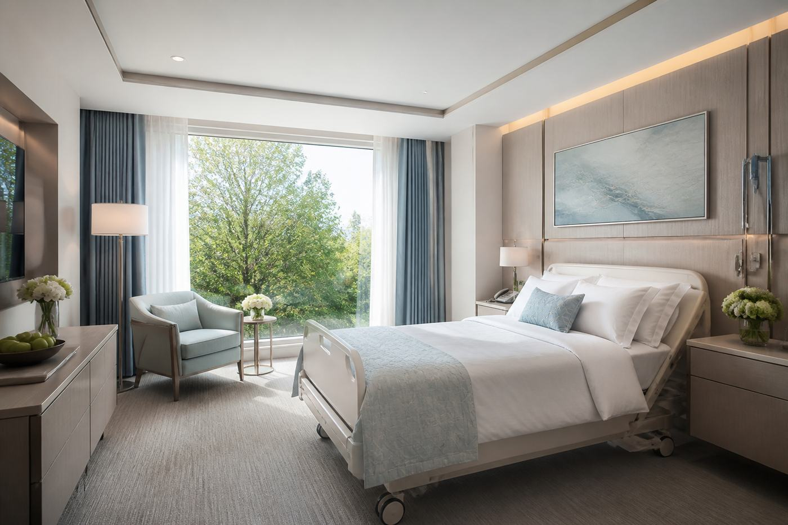

01
Звонок
Говорите своими словами. Паспорт по телефону не требуем.

Человек редко приходит со словом «алкоголизм». Обычно — «просто вывести из запоя» или «сделайте укол, чтобы не пил». Мы не спорим с формулировкой в первый час. Смотрим давление, сознание, судороги, как давно длится запой и что болит кроме стыда.
Дальше развилка: дом, если можно остаться в безопасности, или палата, если нет. Женский, пивной, винный, старческий — это не разные клиники, а разные акценты в одном протоколе. Подростков не принимаем. Принудительно не госпитализируем.
Тише пьют, позже обращаются, чаще стыд.
ПолРабота, «я контролирую», срыв по выходным.
НапитокЛитры «не считаются», пока не считает печень.
Напиток«Культурно» каждый вечер — тоже зависимость.
ВозрастЛекарства, давление, падения. Осторожный протокол.
ФорматЕсли человек не едет, едем мы.
СрочноНе маскируем капельницей инсульт.
МетодТолько после осмотра, не «с порога».
МетодДневник и привычка, не гипноз-шоу.
СрочноВытрезвление и решение: дом или палата.
СрочноКапельница и контроль, не «проспится».
ДальшеКогда тело уже не в абстиненции.
Говорите своими словами. Паспорт по телефону не требуем.
Дом или палата — решаем по состоянию, не по прайсу.
Сон, давление, инфузии.
Кодирование, реабилитация или сопровождение.
Зависимость хроническая. Мы собираем ремиссию и план на срыв, не клятву.
Иногда да. Если есть судороги, спутанность или одиночество — безопаснее палата.
Нет. Частная клиника не ведёт диспансерный учёт.
Дежурный врач на связи 24/7. Можно не называть имя.
Оставьте номер — врач перезвонит в течение 10 минут. Имя можно не указывать.